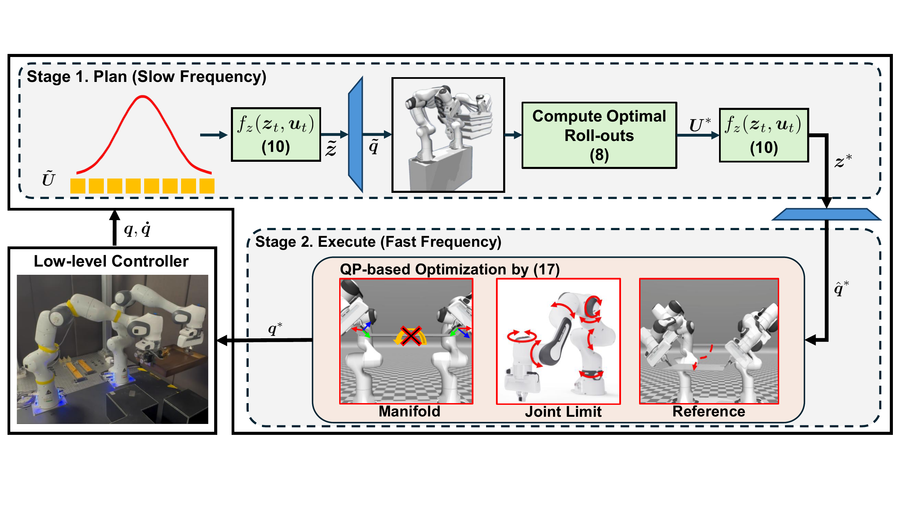
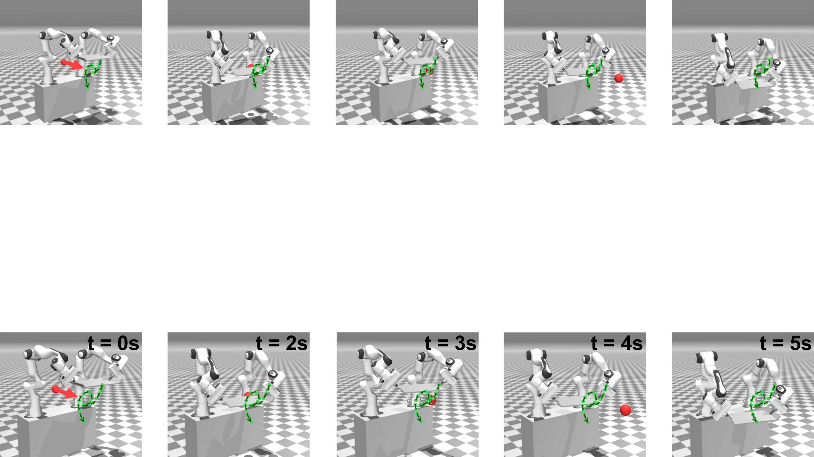

Manifold-Constrained MPPI:
Real-Time Sampling-Based Control Under Hard Constraints
Abstract
Sampling-based model predictive control methods, such as Model Predictive Path Integral (MPPI), offer derivative-free optimization and robustness in complex robotic systems. However, standard MPPI relies on cost-based soft penalties that cannot guarantee hard-constraint satisfaction, severely limiting its applicability to highly constrained tasks such as closed-chain manipulation. To address this, we propose Manifold-Constrained MPPI (MC-MPPI), a real-time sampling-based control framework that enforces manifold-based equality constraints while preserving the computational advantages of MPPI. The key idea is to decouple the constrained optimal control problem into latent-space planning and execution-level correction. At the planning stage, a Variational Autoencoder (VAE) learns a low-dimensional latent representation of the constraint manifold, enabling MPPI to efficiently generate candidate trajectories that are structurally near-feasible without requiring per-sample modification. Since this near-feasible reference enables accurate linearization of the equality constraints, an execution-level Quadratic Programming (QP) controller resolves the residual manifold mismatch in a single solve rather than through iterative projection. Experiments on a 14-DoF closed-chain dual-arm system in both simulation and real-world settings demonstrate that MC-MPPI operates stably at 100 Hz, reliably navigates dynamic environments while effectively maintaining hard equality constraints, and significantly outperforms baseline methods in tracking accuracy.
Methodology
Two-Stage Architecture. The upper-level planner runs MPPI in a VAE-learned latent space to efficiently generate near-feasible candidate trajectories under manifold-based equality constraints. The decoded nominal solution is then corrected by a single-step QP to effectively satisfy the hard constraints, and the resulting reference is tracked by an optimization-based low-level controller. On the dual-arm system, the slow-frequency planner runs at 100 Hz while the fast-frequency executor runs at 500 Hz.

Overall architecture of the MC-MPPI framework: VAE-based latent-space MPPI planner (100 Hz) feeds a single-step QP correction stage, whose output is tracked by a 500 Hz low-level controller.
Constraint Manifold and Why Standard MPPI Fails
We consider an n-DoF system whose configuration q is restricted to the equality-constraint manifold M = {q : h(q) = 0}, an (n−l)-dimensional submanifold of zero Lebesgue measure. Naive MPPI sampling in the ambient space therefore yields feasible configurations with probability zero, and the conventional remedy — adding a large penalty cost on ‖h(q)‖ — cannot strictly enforce the constraint and quickly destabilizes closed-chain tasks.
VAE-Based Latent-Space MPPI
A Variational Autoencoder is pre-trained on feasible configurations on M, and the resulting decoder ψθ : ℝm → ℝn acts as a learned, near-feasible parameterization of the constraint manifold. MC-MPPI runs MPPI directly in this latent space: it propagates a latent state with zt+1 = zt + ũtΔt, decodes each rolled-out latent trajectory back to the joint space via ψθ, and evaluates costs there. A single-instance sampling strategy — using one trajectory-wise noise vector applied uniformly over the prediction horizon — suppresses chattering of decoded motions and yields broader exploration per rollout. Thousands of latent rollouts are evaluated in parallel on the GPU, and the importance-weighted optimum is decoded into a near-feasible reference configuration.
Single-Step QP for Residual Manifold Mismatch
Because ψθ is only an approximation of M, the decoded reference exhibits a residual manifold mismatch. Crucially, the latent-space planning provides a structurally near-feasible reference, which enables the nonlinear equality constraints to be accurately linearized. An execution-level QP controller then explicitly incorporates these equality constraints into a single optimization solve, eliminating residual errors without iterative manifold projection. The resulting physically feasible control command is dispatched to the low-level controller, sustaining stable real-time operation at high control frequency.
Experiments
We validate MC-MPPI on a closed-chain dual-arm manipulation task with two Panda manipulators jointly grasping a flat tray (q ∈ ℝ14, equality constraint h(q) ∈ ℝ8 comprising a 6-D relative-pose closure between the two end-effectors and a 2-D tray-flatness term, latent dimension m = 6). MPPI uses K = 200 samples, horizon T = 30, and Δt = 10 ms. The hard-constraint and static-obstacle experiments are conducted in MuJoCo, while the dynamic-obstacle experiment is performed on the real dual-arm hardware. All computations run on an Intel Core i5-13400F CPU with an NVIDIA RTX 4060 Ti GPU.
Validation of Hard-Constraint Satisfaction
MC-MPPI is compared against Vanilla MPPI (joint-space MPPI with a penalty cost on ‖h(q)‖) and Latent MPPI (an ablation that retains VAE latent-space planning but omits the QP execution stage). MC-MPPI is the only variant that successfully transports the tray to the target while preserving the bimanual grasp, converging at 7.92 s with an average equality-constraint violation of 0.0066 ± 0.0007. Vanilla MPPI fails earliest at 2.97 s with violation peaks reaching 0.082, reflecting the chaotic exploration in the ambient configuration space under soft-penalty handling. Latent MPPI drives the tracking error down smoothly — evidence that the VAE latent space enables meaningful manifold-aware exploration — but the residual manifold mismatch accumulates and the bimanual grasp breaks at 3.41 s, isolating the QP execution stage as the missing ingredient that MC-MPPI provides.
| Method | Outcome | Average ‖h(q)‖ | Peak ‖h(q)‖ |
|---|---|---|---|
| Vanilla MPPI | Fails at 2.97 s | 0.0314 | 0.0820 |
| Latent MPPI | Fails at 3.41 s | 0.0199 | 0.0226 |
| MC-MPPI (Ours) | Converges at 7.92 s | 0.0066 ± 0.0007 | < 0.01 |
Obstacle Avoidance under Static Environments
We evaluate the framework's ability to navigate cluttered static environments while maintaining the manifold-based equality constraint, and additionally characterize the role of constant-innovation latent rollouts (single-instance sampling). With this strategy, MC-MPPI rapidly identifies a collision-free path and converges at 7.60 s with an average constraint violation of 0.0069 ± 0.0003. Without it, per-step independent noise causes the latent velocity to fluctuate randomly; the nonlinear VAE decoder amplifies these fluctuations into jerky joint motions, leading to prolonged stagnation near the obstacles — convergence takes 79.25 s. Holding the latent-velocity innovation constant across the horizon sustains directional exploration along the manifold, which proves critical when the feasible set near obstacles is sparse.
| Variant | Convergence Time | ‖h(q)‖ | Trajectory Smoothness |
|---|---|---|---|
| w. constant-innovation (Ours) | 7.60 s | 0.0069 ± 0.0003 | Smooth |
| w/o constant-innovation | 79.25 s | 0.0067 ± 0.0010 | Jerky (high-frequency oscillation) |
Obstacle Avoidance under Dynamic Environments (Real Hardware)
We deploy MC-MPPI on the real closed-chain dual-arm hardware and evaluate reactiveness under time-varying environments. The bimanual system is commanded to transport the tray between uniformly sampled start/goal poses while a single spherical obstacle (radius 5 cm) traverses the workspace along either the x- or y-axis at randomly selected speeds of 0.1 or 0.2 m/s. Across 40 randomized trials, MC-MPPI achieves a 95% success rate (38/40) with an average constraint violation of 0.0067 ± 0.0010 — comparable to the static-obstacle scenario. The MPPI planner and the QP execution stage run on separate parallel threads, sustaining 100 Hz replanning and 500 Hz reference tracking. The two failures occur only when the obstacle moves rapidly along the x-axis, where the dual-arm reachable region provides insufficient lateral clearance for evasion.

Snapshots of MC-MPPI executing a real-time evasion maneuver to bypass a moving obstacle on the real dual-arm hardware while maintaining manifold-based equality constraints.
| Trials | Success Rate | ‖h(q)‖ | Planning Frequency | Execution Frequency |
|---|---|---|---|---|
| 38 / 40 | 95% | 0.0067 ± 0.0010 | 100 Hz | 500 Hz |
People
BibTeX
@article{Lee2026MCMPPI,
title = {Manifold-Constrained {MPPI}: Real-Time Sampling-Based Control Under Hard Constraints},
author = {Lee, Seulchan and Kim, Sanghyun},
journal = {International Journal of Control, Automation, and Systems},
year = {2026},
note = {Submitted}
}